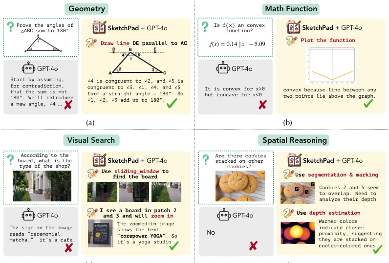
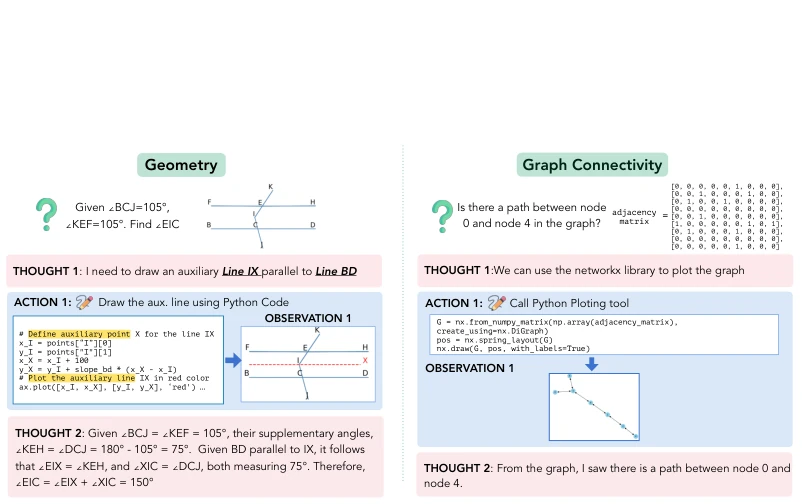
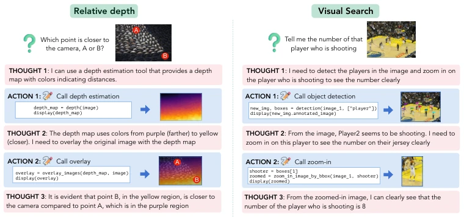
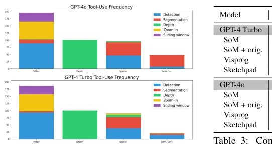
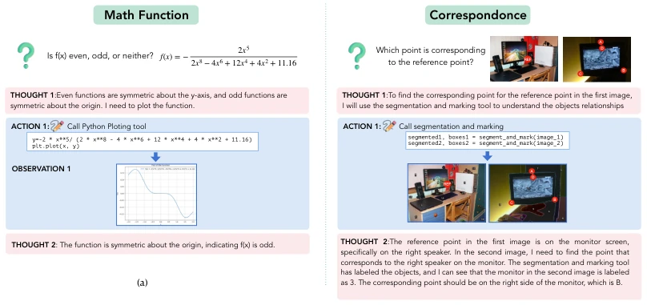

This paper equips multimodal large models with a 'digital whiteboard', enabling them to draw auxiliary lines, mark bounding boxes, and create heatmaps during reasoning just like humans. Although it sounds like adding a Photoshop plugin to GPT-4o, the effect is indeed impressive, directly topping the leaderboards on math and vision tasks. However, this essentially relies on Python code generation to 'cheat', and the computational cost is certainly higher than directly outputting text. Moreover, it relies on external tools (such as Grounding-DINO); if the tool fails, the model is also confused. This counts as pulling the 'visual chain of thought' from text to pixels, but it is still far from true 'embodiment', after all, it cannot move an actual robotic arm, only a mouse cursor. Although this 'draw-then-look' mechanism is flexible, running drawing code for every inference poses an efficiency risk, and it requires extremely high capability from the model to understand visual output; if the model cannot understand the image it drew itself, the entire process breaks.
Humans habitually sketch when solving problems, such as adding auxiliary lines to geometry problems, but existing models only have text chain-of-thought. Visprog [14] and ViperGPT [38] can call tools, but their plans are fixed and cannot be adjusted based on intermediate results. SoM [55] can only add static prompts, lacking interactivity. BLINK [9] points out that models lack perceptual capabilities and cannot effectively utilize them even with visual modules. This paper aims to solve this 'missing visual reasoning' problem, enabling models to dynamically generate visual intermediates, using visual auxiliary lines to simplify complex spatial and mathematical reasoning, making up for the shortcomings of pure text reasoning in spatial understanding. Especially for tasks requiring spatial relationships, text descriptions are often not intuitive enough, while visual sketches can provide richer information.

Figure 1: SKETCHPAD equips GPT-4 with the ability to generate intermediate sketches to reason over tasks. Given a visual input and query, such as proving the angles of a triangle equal 180°, SKETCHPAD enables the model to draw auxiliary lines which help solve the geometry problem. The examples are from [8, 51, 44]. For all these examples, without SKETCHPAD, GPT-4o fails to get the correct answer, while SKETCHPAD + GPT-4o achieves the correct solution.
The framework is based on AutoGen, adopting a Thought-Action-Observation loop. In the Thought stage, the model analyzes context and plans what to draw; In the Action stage, it generates Python code to call drawing libraries (matplotlib, networkx) or visual expert models (Grounding-DINO, SAM, DepthAnything); In the Observation stage, the model 'sees' the generated image. The innovation lies in code generation allowing dynamic modification of visual content, rather than fixed templates. For example, drawing auxiliary lines for geometry problems, or heatmaps for depth estimation. The model updates its cognition by observing these visual products and decides the next action. The entire process requires no fine-tuning, directly prompting existing models. The core lies in converting visual operations into executable code, enabling the model to think through 'drawing' like humans. Additionally, the system supports various visual tools, including detection, segmentation, depth estimation, etc., which are encapsulated as Python functions that the model can freely combine and call. This design enables the model not only to generate images but also to adjust strategies based on image feedback, achieving a true visual chain of thought.

Figure 2: Overview of SKETCHPAD. Given a multimodal query, the SKETCHPAD agent generates a sketching plan to address the query (Thought), and then synthesizes a program to create visual sketches (Action). By analyzing the resulting sketches (Observation), which serve as a visual representation of the reasoning process, the model generates a final response to the query.
Tested on math (Geometry3K, IsoBench) and vision (V*Bench, BLINK) tasks. Baselines include GPT-4o, Gemini, LLaVA, etc. The metric is accuracy. GPT-4o with Sketchpad improved math by an average of 11.2% and vision by 8.6%. V*Bench reached 80.3%. Comparison shows better performance than SoM and Visprog. Ablation shows tool usage depends on the task; GPT-4o uses tools better than Turbo. Significant improvements were observed in depth estimation and spatial reasoning, proving the value of visual aids for complex tasks. Additionally, open-source model LLaVA was tested, finding that Oracle Sketchpad also improves its performance, indicating the framework has generalizability.

Figure 3: Examples of SKETCHPAD applied to vision tasks. The figure shows actual outputs generated by SKETCHPAD. By contrast, the baseline GPT-4o model cannot answer these questions correctly. Note that for demonstration purposes, the “A” and “B” marks in (a) are different from the actual images in the experiments.

Figure 4: Percentage of times GPT-4o and GPT- 4 Turbo use a visual module in SKETCHPAD when solving V ∗Bench, relative depth, spatial reasoning, and semantic correspondence tasks.
其他图片Other Figures

Figure 5: Qualitative examples of how GPT-4o and SKETCHPAD solve (a) complex mathematical and (b) visual reasoning tasks.